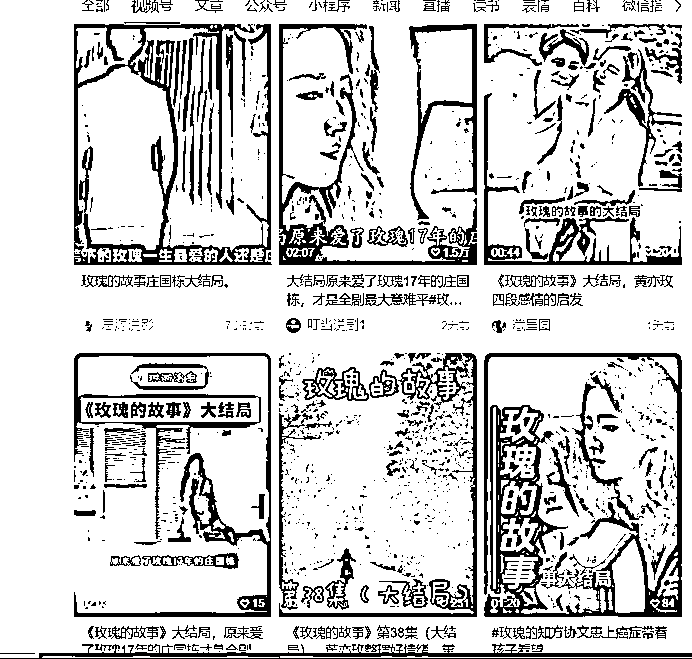
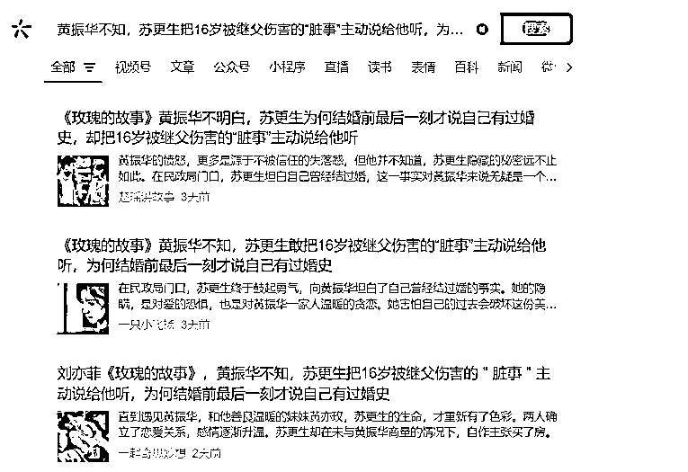

来源：https://xcozwbpl16.feishu.cn/docx/Xj8hdYUcgomCM0xH55vc2jT1n1f
如果你不擅长ai，但是喜欢刷剧，那你可太适合啦！
如果你工作忙没时间ai批量但是喜欢看剧，那你可太适合啦！
如果你又不会ai又感兴趣剧评，当然你也很适合！
花点时间去刷视频号，大概了解一下准备口述的剧的剧情，如果想更省心，可以先找到你要对标的文章，再去看类似的剧情

参考单篇：首先找到《黄振华不知，苏更生把16岁被继父伤害的“脏事”主动说给他听，为何结婚前最后一刻才说自己有过婚史》这样的类似爆文，再去搜索栏里搜索，找到类似的几篇，再将内容一点点裁剪拼凑起来

哥哥对妹妹说：
妞妞，你和妈妈说一下我今天不回家吃饭了，我和坐我前面的男生张其文去吃蛋包饭，我们晚上一起做完作业再回来不会很晚的，晚上十点前肯定到家了
那这时候妹妹不可能一字不变的告诉妈妈，她只记得大概的意思
妹妹对妈妈说：
妈妈，哥哥说他晚上要和同学出去吃饭，和他班上关系很好的一个男生出去吃蛋包饭，哥哥说他们还要一起做作业会晚回来一点，不过他说好像不超过十点的
千万不要说一句删一句，你觉得上一句不太行，你再说一句就完事了，不要一会暂停一会暂停，这样会非常扰乱你的思绪！